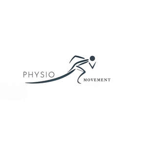

Trade Mark Journal No.2025/048 28 November 2025
UK00004288294 3 November 2025 (44)

- Class 44
- Physiotherapy; Physiotherapy services; Physiotherapy [physical therapy]; Electro therapy services for physiotherapy; Occupational therapy and rehabilitation; Chiropody; Ayurveda therapy; Acupressure therapy; Counselling relating to occupational therapy; Cupping therapy services; Medical counselling; Occupational therapy services; Medical services in the field of treatment of chronic pain; Hydrotherapy services; Dietetic counselling services [medical]; Moxibustion therapy; Therapy services; Chiropractic services; Bodywork therapy; Therapeutical pilates; Autogenic therapy services; Medical counselling services; Osteopathy; Hydrotherapy; Occupational therapy; Chiropractic; Chelation therapy services; Surgical treatment services; Physical therapy services; Heat therapy [medical]; Chiropractics; Reflexology services; Medical treatment services; Medical clinic services; Clinic (Medical -) services; Clinic services (Medical -); Cupping therapy; Insomnia therapy services; Counselling relating to the psychological treatment of medical ailments; Massage and therapeutic shiatsu massage; Hydrotherapy home services; Cellulitis treatment services; Sports massage; Beauty therapy treatments; Foot massage services; Medical treatment services provided by a health spa; Bioresonance treatment and care; Acupuncture services; Pregnancy massage services; Health clinic services [medical]; Dental clinic services; Massage services; Medical spa services; Sports medicine services; Beauty therapy services; Hot stone massage therapy services; Health care relating to relaxation therapy; Residential medical treatment services; Cryotherapy services; Paramedical services; Mobile chiropractic services; Counseling relating to occupational therapy; Music therapy services; Medical treatment services provided by clinics and hospitals; Physical therapy; Health counselling; Speech therapy services; Drug rehabilitation services; Consultancy services relating to orthopaedic implants; Therapy (Physical -); Provision of medical treatment; Mobile medical clinic services; Physical rehabilitation; Reflexology; Medical nursing services; Nursing services (Medical -); Cosmetic and plastic surgery clinic services; Nutrition counselling; Ambulant medical care; Medical analysis services relating to the treatment of patients; Chiropractic services for children; Animal-assisted therapy; Health care relating to therapeutic massage.
Aziz Ullah Khan Ettajli